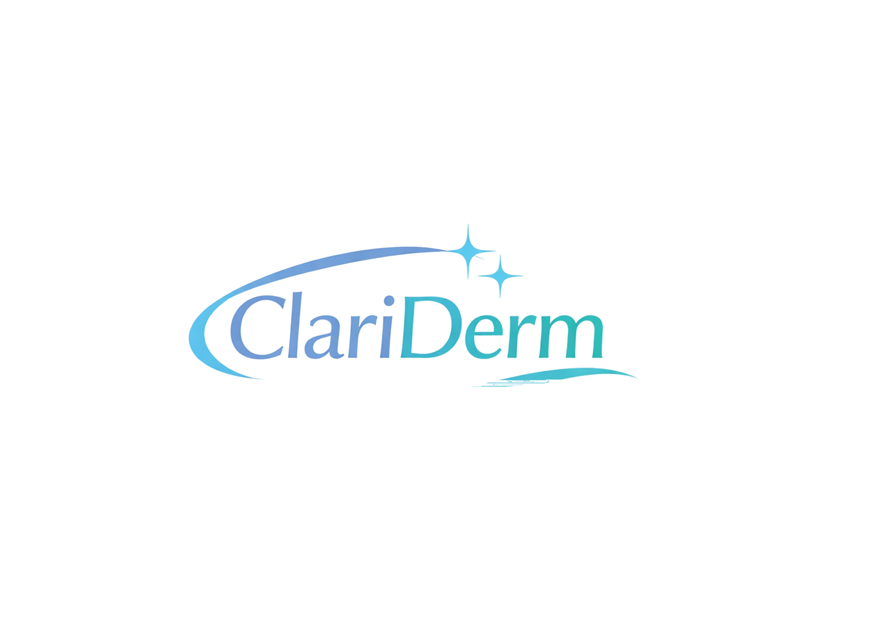

Não se preocupe e diga adeus às manchas e marcas da acne!
Com FPS 30 de largo espectro, protege a pele da radiação UVA e UVB, ajudando a manter a sua pele mais uniforme e saudável todos os dias.


Ficou cheio de manchas devido às cicatrizes?
Ação farmacológica
Ácido kójico
Niacinamida
Zinco PCA
Modo de uso
Aplicar uma pequena quantidade no rosto limpo e seco, de manhã e à noite. De manhã reforçar sempre o uso com protetor solar.
Precauções
Evitar o contacto com os olhos. Em caso de irritação, suspender o uso. Não recomendado para pele extremamente sensível ou com feridas.
Porquê a forma de Gel-Creme?
Produção
FAQs
Sim, a textura Gel-Creme foi desenhada para permitir a aplicação imediata de maquilhagem
Deve ser aplicado no rosto todo. Embora o objetivo seja clarear as manchas, a Niacinamida e o Zinco trabalham na saúde global da pele, prevenindo que novas manchas apareçam e controlando a oleosidade de forma uniforme.
Não. A nossa fórmula Gel-Creme de toque seco foi desenhada especificamente para peles com tendência acneica. É rapidamente absorvida e deixa um acabamento mate, evitando o brilho excessivo comum nos protetores solares tradicionais.
Embora o Ácido Kójico seja um ativo natural, recomendamos sempre que consulte o seu médico antes de introduzir novos cuidados despigmentantes na rotina durante a gravidez, devido à maior sensibilidade hormonal da pele neste período.
Os primeiros sinais de uniformização do tom da pele surgem geralmente após 4 a 6 semanas de uso contínuo, que é o tempo médio de renovação das células da pele. Para manchas mais antigas, o resultado ideal atinge-se após 3 meses.